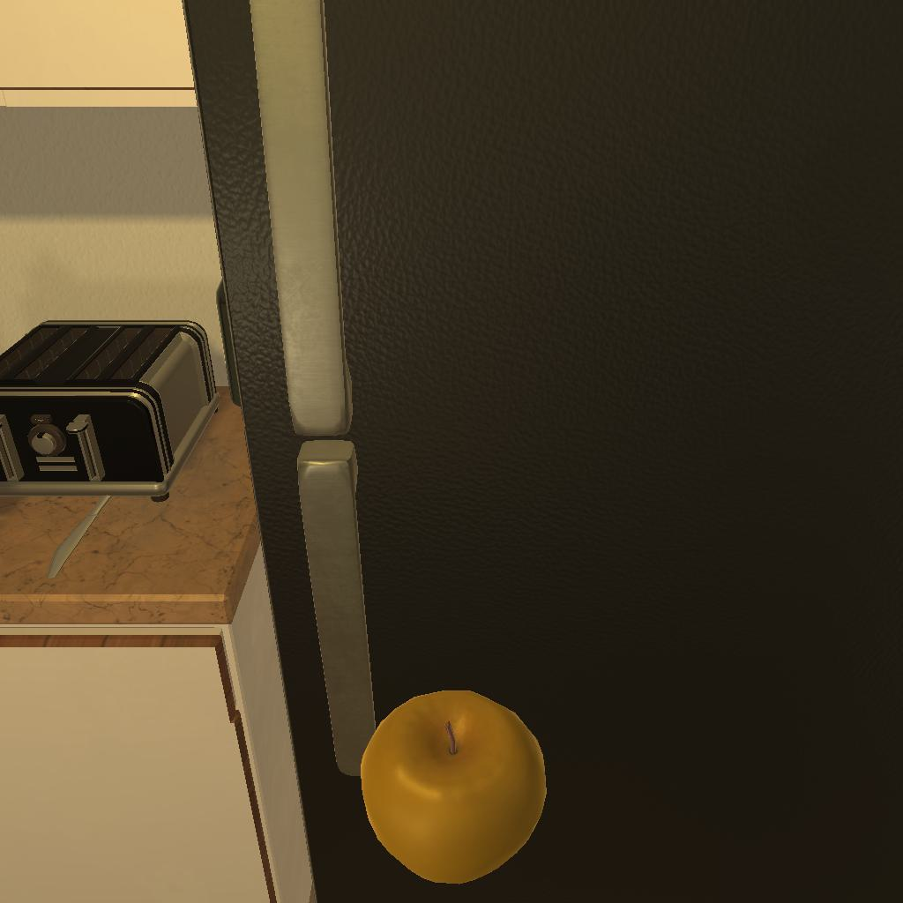

---------------------------------------------------------task: 14---------------------------------------------------------
--------------------------------------------------------------------------------------------------------------------------------------------------------------------
--------------------------------------------------------------------------------------------------------------------------------------------------------------------
Step:--------------------------------------------------------------------------11-------------------------------------------------------------------------------
----------------------------------------
VLM Prompt:
Image1:
Image2:
Image3:
**Instruction**
1. Analyze the provided images to identify all visible household objects and compare the difference between images (e.h. whether the object is opened or not and taken on hand or not), focusing on those relevant to the task description "put a cool apple in countertop."
2. Use the analysis of images and the task hint "The agent must find an object of the desired type, pick it up, go to a fridge, cool the object with the fridge, then find the correct location to place it, and put it down there. The agent does not need to use the fridge button or open the fridge to cool the object, and the agent just needs to do action that is "cool the object with the fridge"." to answer the question: what is the most reasonable action in the choices for the task description "put a cool apple in countertop"?
3. Decide and write the answer using the template: The answer is: (i): , where i is the real number. If there is no desired object in images, search every place based on **Initial Observation** to find the object. And if no one is exactly correct, choose a similar answer.
**Initial Observation**
You are in the middle of a room. Looking quickly around you, you can see microwave (1), countertop (1-2), cabinet (1-11), diningtable (1), drawer (1-3), sink (1), sinkbasin (1), toaster (1), stoveburner (1-4), fridge (1), coffeemachine (1), garbagecan (1)
**Answer Choices**
(1): go to microwave 1
(2): go to countertop 1
(3): go to cabinet 1
(4): go to diningtable 1
(5): go to drawer 1
(6): go to sink 1
(7): go to cabinet 2
(8): go to cabinet 3
(9): go to sinkbasin 1
(10): go to cabinet 4
(11): go to cabinet 5
(12): go to drawer 2
(13): go to countertop 2
(14): go to toaster 1
(15): go to cabinet 6
(16): go to stoveburner 1
(17): go to cabinet 7
(18): go to stoveburner 2
(19): go to stoveburner 3
(20): go to stoveburner 4
(21): go to drawer 3
(22): go to cabinet 8
(23): go to cabinet 9
(24): go to cabinet 10
(25): go to coffeemachine 1
(26): go to cabinet 11
(27): go to garbagecan 1
(28): open fridge 1
(29): close fridge 1
(30): cool apple 1 with fridge 1
(31): examine apple 1
**Answer**
Let's think step by step by following the instructions.
----------------------------------------
----------------------------------------
Original Response:
First, we analyze the images provided. In all three images, we see a yellow apple placed on the countertop, close to a corner and a fridge. There are no visible differences between the images, and they all seem identical. The apple appears unaltered, and it is not being held by anyone. There are no other household objects visible in the images that are relevant to the task description.
According to the task hint, the agent does not need to use the fridge button or open the fridge to cool the object; the agent just needs to perform an action that is "cool the object with the fridge." Based on this instruction and the **Initial Observation**, we can determine that the agent is already in the correct location with the apple and the fridge.
Given the task description "put a cool apple in countertop" and the task hint, the most reasonable action to select from the provided choices is to cool the apple with the fridge, as the agent does not need to physically open the fridge to complete this task.
The answer is: (30): cool apple 1 with fridge 1.
----------------------------------------
----------------------------------------
>>> Refine Original VLM Response and Get Pure Action: cool apple 1 with fridge 1
----------------------------------------
-----------------------------------------------------------------
Running time: 10.691266298294067 seconds
Total Money: 8.052860000000006
-----------------------------------------------------------------
-----------------------------------------------------------------
Text Observation:You cool the apple 1 using the fridge 1.
-----------------------------------------------------------------
UNSUCCEED